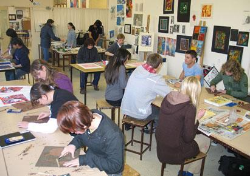
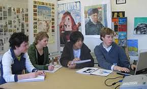

| Block A | Block B | Block C | Home | Block E | Block F | Block L | Block S | Switch CSS |
|  |
D BlockNarrabundah College's D block is a vibrant hub where creativity flourishes and artistic expression takes center stage. In its dynamic studios and galleries, students explore a multitude of artistic mediums and techniques, guided by dedicated instructors. From traditional drawing and painting to innovative digital design, D block offers a diverse array of courses tailored to students' interests and aspirations. Here, students experiment, refine their skills, and develop their unique artistic voices. Throughout the block, galleries and exhibition spaces provide platforms for students to showcase their work, fostering a culture of sharing and collaboration within the college community. As students immerse themselves in the transformative power of art, they emerge with newfound confidence and a passion for creativity, ready to make their mark on the world. |
Still D BlockNarrabundah College's D block stands as a sanctuary of creativity and expression, where students delve into the captivating world of art and design. Within its vibrant studios and galleries, imagination knows no bounds as budding artists explore diverse mediums, techniques, and concepts under the guidance of passionate instructors. At the heart of D block, art studios buzz with energy as students unleash their creativity on canvases, sculptures, and digital interfaces. Here, they explore the principles of form, color, and composition, honing their skills and developing their unique artistic voices. From drawing and painting to ceramics and photography, D block offers a diverse range of courses that cater to students' interests and aspirations. In the studios, students experiment with different techniques and materials, pushing the boundaries of traditional art forms and embracing innovation and experimentation. Beyond the studios, D block houses galleries and exhibition spaces where students showcase their work to the college community and beyond. From solo exhibitions to collaborative projects, these spaces serve as platforms for students to share their perspectives, inspire others, and engage in dialogue about the power of art to shape culture and society. As the sun sets on another day of creative exploration in D block, students emerge with a deeper appreciation for the transformative power of art and the endless possibilities it holds for self-expression and communication. Armed with skills, confidence, and a passion for creativity, they are prepared to embark on their own artistic journeys, enriching the world with their unique perspectives and talents. |
 |